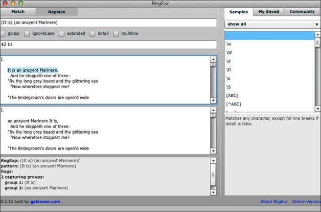

4.3 捕获分组和后向引用
当一个模式的全部或者部分内容由一对括号分组时，它就对内容进行捕获并临时存储于内存中。可以通过后向引用重用捕获的内容，形式为：
\1
或
$1
这里\1或$1引用的是第一个捕获的分组，而\2或$2引用第二个捕获的分组，以此类推。sed只接受\1这种形式，而Perl则两种都接受。
最开始sed支持范围从\1到\9的后向引用，但现在已经没有这样的限制了。
下面再展示一下后向引用的使用方法。我们将使用它来重新排序诗文中的一行词，在此先跟作者柯勒律治道个歉。点击RegExr的Repalce标签，在顶部的文本框中输入下面的模式：
(It is) (an ancyent Marinere)
向下滚动主文本框（第三个文本区）直到你可以看到被标亮的那一行，然后在第二个文本框中，输入：
$2 $1
就可以看到在最下面的文本框中那一行被重新排列为：
an ancyent Marinere It is,
结果参见图4-2。

图4-2 用$1和$2进行后向引用
要用sed得到相同结果，可以这样做：
sed -En 's/(It is) (an ancyent Marinere)/\2 \1/p' rime.txt
输出为：
an ancyent Marinere It is,
和RegExr中一样。为了帮助你理解每个细节，下面我们来分析一下这个sed命令。
Perl中类似的命令会做相同的事：
perl -ne 'print if s/(It is) (an ancyent Marinere)/\2 \1/' rime.txt
注意该命令使用了\1风格的语法。当然，你也可以使用$1语法：
perl -ne 'print if s/(It is) (an ancyent Marinere)/$2 $1/' rime.txt
我喜欢Perl允许不必在循环中跳转就能打印指定行的方式。
但关于输出，还有一点要注意的是：
an ancyent Marinere It is,
在转换过程中某些单词首字母的大小写被打乱了。Perl可以使用\u和\l来修正这个问题，就是这样：
perl -ne 'print if s/(It is) (an ancyent Marinere)/\u$2 \l$1/' rime.txt
现在结果看起来好多了：
An ancyent Marinere it is,
接下来解释一下原因。
这些指令在文本中出现其他指令（比如\l或\E，作为文字使用的字符串的结尾）之前都是起作用的。请自己动手试试这些指令。
命名分组
命名分组（named group）就是有名字的分组。这样，就可以通过名字（而不是数字）来引用分组。下面展示一下Perl语言中如何使用命名分组：
perl -ne 'print if s/(?<one>It is) (?<two>an ancyent Marinere)/\u$+{two}\l$+{one}/' rime.txt
我们来看看这个命令：
如果在一个模式中有分组被命名，那么你还可以重用该命名分组。解释一下这句话的意思，假设你要查找含有连续六个0的字符串：
000000
这个例子很浅显，但可以说明其工作原理。用这一模式对连续三个0的分组命名（其中z是分组名，可以任意取）：
(?<z>0{3})
然后你可以再使用该分组，就像这样：
(?<z>0{3})\k<z>
或者：
(?<z>0{3})\k'z'
或者：
(?<z>0{3})\g{z}
请在RegExr中尝试一下看看结果。这些示例应该都能用。表4-3列出了命名分组可能使用的各种语法。
表4-3 命名分组的语法
| 语法 | 描述 |
|---|---|
| (?<name>…) | 命名分组 |
| (?name…) | 另一种命名分组的方式 |
| (?P<name>…) | Python中的命名分组 |
| \k<name> | 在Perl中引用分组名 |
| \k'name' | 在Perl中引用分组名 |
| \g{name} | 在Perl中引用分组名 |
| \k{name} | 在.NET中中引用分组名 |
| (?P=name) | 在Python中中引用分组名 |